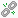

A resource cluster is a collection of computing, storage, and network
resources that have the same resource attributes in a resource zone.
A virtual cluster is the resource pool used by FusionManager to provision virtual resources.
You can add a USB device only when the VM is
in the Running or Stopped state, the VM is already equipped with a USB controller, and the
host on which the VM is running has available USB devices.
A maximum
of four USB devices can be attached to each set of VM. The four USB
devices must be deployed on the same host. Attaching a USB device
to a VM has the following impacts on the VM:
- HA: When HA is enabled on a VM to which a USB device is attached,
the USB's state changes to Assigned, Non-passthrough and the USB device cannot be attached to other VMs.
- Migration: The VM does not support live migration after being
attached to a USB device.
- Hibernation: After a VM is hibernated, do not remove or insert
the USB device that is attached to the VM.
- VM snapshot: The VM does not support memory snapshots after being
attached to a USB device.
- Cluster scheduling policy: The cluster scheduling policy takes
no effect on the VM to which a USB device is attached.
- Transmission rate: After the USB device is attached to a VM, the
maximum transmission rate of the USB port is 3 MB/s.
Choose . Select the target
resource zone, choose Computing Resource Pools, select the target resource cluster, and choose Device
Resources. Then click or .
Copyright © Huawei Technologies Co., Ltd.